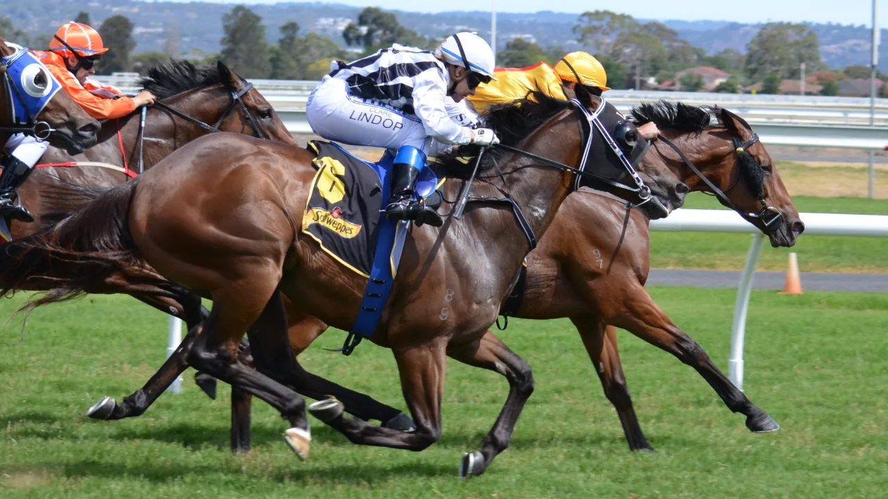

Le Quinté+ est le pari hippique le plus populaire de France : chaque jour, sur une course de référence (le plus souvent la première réunion), il faut trouver les cinq premiers chevaux dans l'ordre. Personne ne le trouve ? La tirelire se gonfle d'un meeting à l'autre et peut atteindre 1 million d'euros. Ce guide explique les règles telles qu'elles figurent au règlement des paris PMU, les mises minimales pari par pari, et surtout comment transformer un pronostic en tickets concrets — sans se ruiner.
Prérequis : avoir 18 ans minimum. En ligne, un compte sur pmu.fr (vérification d'identité obligatoire) ; en dur, n'importe quel point de vente PMU.
D'après le règlement des paris PMU en ligne (version applicable en 2026) :
| Pari | Chevaux | Mise minimale | Mise réduite (Flexi) |
|---|---|---|---|
| Quinté+ | 5 | 2 € | 1 € / 0,50 € |
| Multi | 4 à 7 | 3 € | 1,50 € |
| 2sur4 | 2 | 3 € | 1,50 € |
| Trio / Couplé | 3 / 2 | 1,50 € / 1,50 € | — |
Une formule à plusieurs chevaux coûte toujours : nombre de combinaisons × mise. C'est là que se joue le budget.
Un bon pronostic donne une sélection de 8 chevaux et un top 5 (voir comment lire un pronostic de quinté). Voici comment les transformer en tickets, du plus économique au plus ambitieux :
Deux chevaux choisis doivent finir parmi les quatre premiers, ordre libre. Avec notre top 5, on prend les deux piliers : par exemple les n° 1 et 2 de la sélection. Rapport modeste, mais c'est le pari le plus « touchable » : deux chevaux sur quatre places, c'est statistiquement le plus fréquent de vos gains.
Vos 5 chevaux doivent occuper les 4 premières places, ordre libre. Multi en 5 = 5 combinaisons × 3 €. C'est le ticket préféré des joueurs réguliers : il gagne dès que votre top 5 contient les quatre premiers — y compris quand le favori a échoué et que le quinté est « impossible ».
Une à quatre bases associées à une sélection d'associés. Exemple typique avec notre pronostic : base n°1 + n°2, associés n°3 à n°8 (6 chevaux) en formule simplifiée : 2 × 6 = 12 combinaisons = 24 €. En ajoutant le champ « tous ordres », le coût explose (×120) — réservez l'ordre à vos certitudes absolues.
Astuce économique : 1 base + 7 associés simplifié = 7 combinaisons = 14 €. C'est le ticket qui suit exactement la structure d'un pronostic : une base sûre, une sélection autour.
5 chevaux : 1 combinaison en simplifié (un seul ordre) = 2 €. En désordre = 2 € aussi (même mise, rapport différent). En tous ordres : 120 combinaisons = 240 € — le prix d'un rapport Ordre à six chiffres, mais rarement rentable sans conviction très forte. La voie sage : jouer 2-3 tickets à 2 € sur des ordres différents (ex. base en 1re position, deux variantes derrière).
Supposons la publication : sélection 12 - 3 - 13 - 16 - 10 - 6 - 1 - 7, top 5 12-3-13-16-10, base 12. Tickets du jour :
Total : 34 € (ou 26,50 € en Flexi) pour couvrir la sélection complète sous tous les angles. Retrouvez ces formules déjà calculées dans le pronostic du jour, publié chaque matin.
Fixez un budget hebdomadaire avant la première mise — par exemple 10 € — et divisez-le en unités de mise. Ne bâtissez jamais plus de 2-3 tickets par course : multiplier les tickets sur le même quinté dilue le rapport. Ne « rattrapez » jamais une perte en doublant la mise suivante : c'est la mécanique exacte de la spirale. Et souvenez-vous que même le meilleur pronostiqueur rate une base une course sur deux (c'est visible dans notre track record public — 60 courses, données brutes).
Oui, sur pmu.fr avec un compte (18 ans minimum, vérification d'identité). Les tickets sont valables jusqu'au départ réel, les gains crédités automatiquement, et l'historique de vos jeux reste consultable — utile pour suivre votre bankroll.
2 € par combinaison. Avec l'option Flexi du règlement, une combinaison peut être enregistrée à 1 € ou 0,50 €, gains proportionnels — idéal pour tester une sélection à 8 chevaux sans exploser le budget.
Quand aucun joueur ne trouve le quinté dans l'ordre, les mises « Ordre » non gagnées alimentent une cagnotte — la tirelire — qui peut atteindre 1 million d'euros. Elle est remise au joueurs qui trouvent enfin les cinq chevaux dans l'ordre. Certaines courses du calendrier (quintés « événements ») affichent des tirelires garanties.
Le règlement prévoit le report : votre combinaison est reformulée avec le cheval de repli (le « NP de repli » annoncé à la réunion), ou remboursée selon la formule. Le PMU affiche systématiquement la règle appliquée sur le ticket. C'est une raison de plus pour vérifier les non-partants juste avant le départ — notre tableau des partants les signale en rouge.
Jouez avec modération
Les jeux d'argent sont interdits aux mineurs. Ne misez jamais plus que ce que vous pouvez vous permettre de perdre. En cas de difficulté, consultez Joueurs Info Service au 09 74 75 13 13.